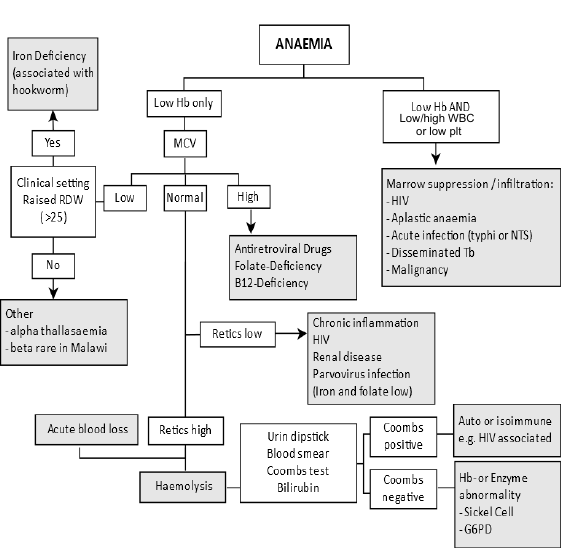

(most common causes written in CAPITALS - always check and treat those in Malawi as their presence significantly increases post-discharge mortality)
| Decreased Production | Destruction | Loss |
|---|---|---|
|
|
|
| Not malnurished | Malnurished | |
|---|---|---|
| Volume | Either 10 ml/kg of packed cells or 20 ml/kg of whole blood in 3-4 hours |
If stable await senior review If unstable give whole blood (10 ml/kg in 4 hours) If signs of cardiac failure, infuse 5-7ml/kg of packed cells in 3-4 hours (Malnutrition) |
| Furosemide iv | Only if fluid overload / cardiac failure 1-2 mg/kg, max. 20 mg (give half way through transfusion) | Give in all malnourished children 1-2 mg/kg (give half way through transfusion) |
| Check PCV and/or Hb + MPs | Consider after 24 h if still signs of symptomatic severe anaemia | |
| Repeat transfusion | Next morning (if necessary) - i.e. Hb 4 g/dL or PCV < 12% and/ or patient still symptomatic | NOT unless Hb/PCV less than pre-transfusion or not increasing after 4 days |